| 日付 | 2013年9月21日（土） - 2013年9月22日（日） | |||||
|---|---|---|---|---|---|---|
| 山域 | 八ヶ岳 | |||||
| メンバー | 家族（妻、長女・2歳、長男・0歳） | |||||
| 山行形態 | 子連れ1泊2日ホテル泊 | |||||
| アクセス | 車 | |||||
| ルート (Map2) |
|
2日目
2日目はいろいろ検討した結果、鉢伏山に行くことにする。
美ヶ原、霧ヶ峰の近くにある山で、山頂近くまで車道が通じている。
宿からの直線距離は比較的近いのだが、大回りする必要があるため案外時間がかかる。
車道を走っていくと、ゆったりとした山容の鉢伏山が見えてきた。
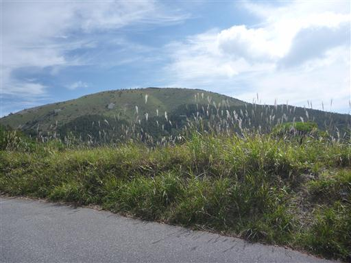
鉢伏山荘の駐車場に到着。標高1830m。
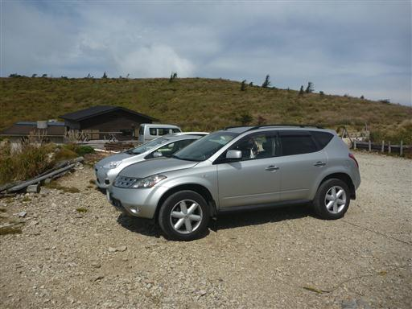
駐車場からはすぐ目の前に鉢伏山を望むことができる。
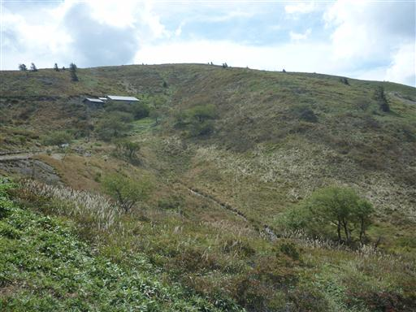
登山道はよく整備されている。登山というより散策という感じだ。
霧ヶ峰や美ヶ原より知名度が低いため、観光客はほとんどおらず静かな雰囲気だ。
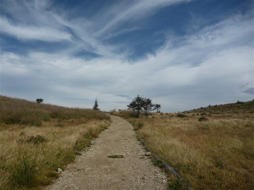
娘は歩き始めだけキャリアに乗っていたが、すぐに降りて歩き出した。
この道であれば何の心配もなく歩かせることができる。
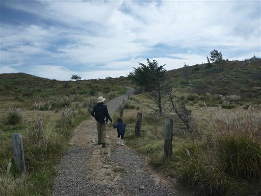
展望の良さそうな小ピークがあったので立ち寄ってみる。
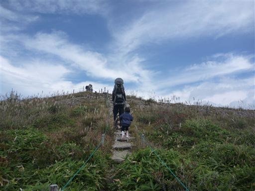
小ピークから望む鉢伏山。
穏やかな山容だが、昔は車道や登山道が整備されておらず
それなりに登るのが大変な山だったようだ。
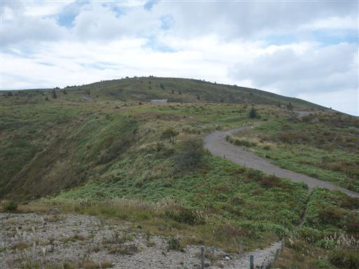
山頂が平らな美ヶ原がすぐ近くに見えている。2年前に訪れた場所だ。
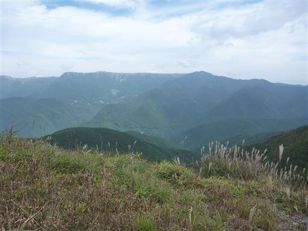
昨日登った蓼科山もよく見えている。
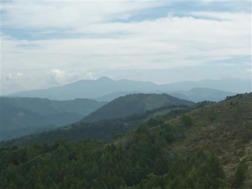
西側には北アルプスが見えている。正面が穂高岳、右端が槍ヶ岳だ。
ここは美ヶ原と並んで北アルプスの展望台。少し霞んでいるのが残念だ。

山頂に向かって緩やかな坂を登っていく。展望を遮るものがないので歩いていて気持ちが良い。
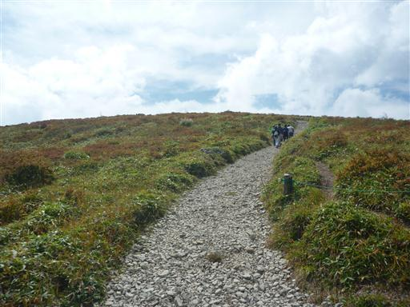
辺りは紅葉が始まりかけている。
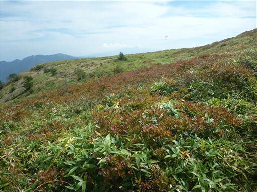
30分ほどで鉢伏山の山頂に到着する。標高1928m。
山頂は地味で、展望もさほど良くない。
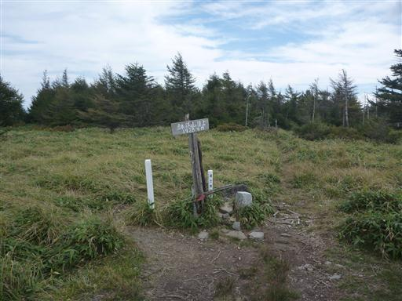
山頂から少し行った先に展望台があるので、そちらに向かうことにする。
途中、鳥居がポツリと立っていたので寄り道してみる。
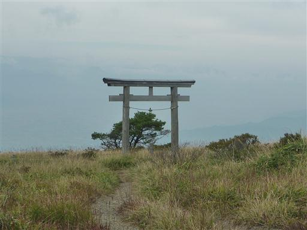
小さな社が祀られている。
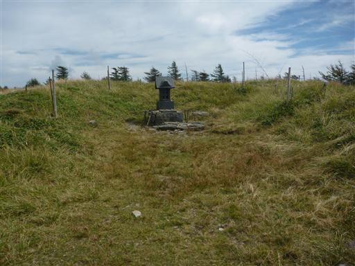
鳥居から展望台まで細い道が続いている。
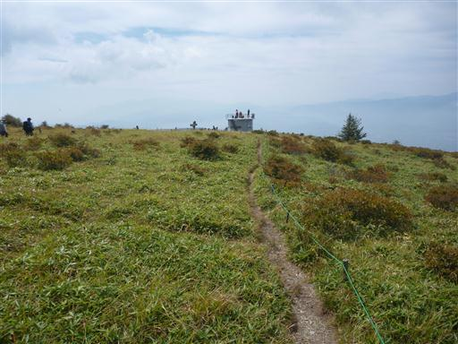
展望台に到着。こちらにも鉢伏山頂上の標識が立っている。
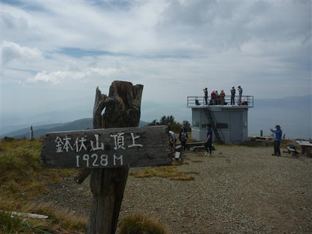
展望台からは眼下に高ボッチ高原を見下ろすことができる。
展望を眺めながら昼食をとったら、下山することにする。
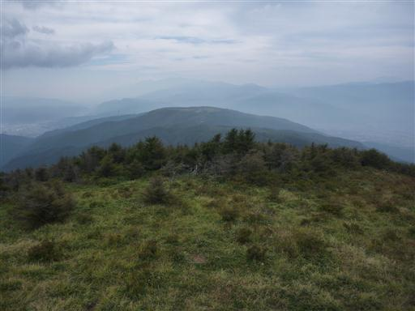
鉢伏山を下山したら、山頂から眺めた高ボッチ高原に行ってみることにする。
ここは広大な駐車場が用意されている。標高1640m。
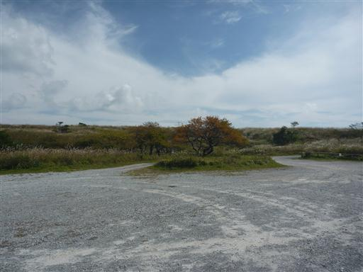
ここも北アルプスの展望台なのだが、雲が出てきてもうほとんど見えない。
観光シーズンではないのか、広大な駐車場はガランとしていて寂しい。
ここでテントを張っている人が何組かいる。
展望が良い場所なので、ここでのキャンプはなかなか良いかもしれない。
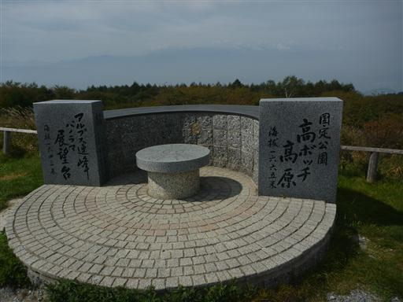
高ボッチ山を目指して辺りを少し散策する。
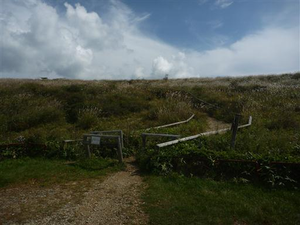
広々とした高原を歩く。山の上とは思えないような風景だ。
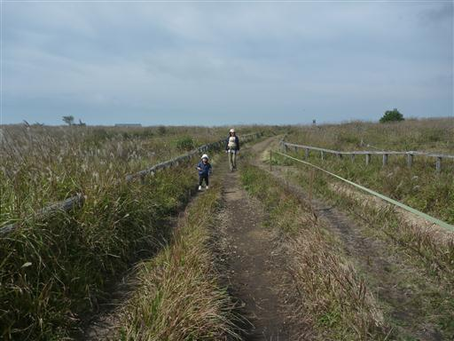
どこまでもどこまでもススキの原が広がっている。
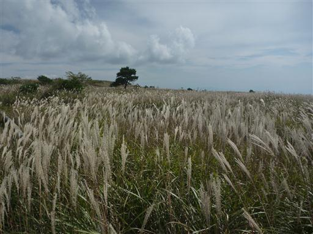
高ボッチ山まで標高差はほとんどなく、子供でも歩きやすい道だ。
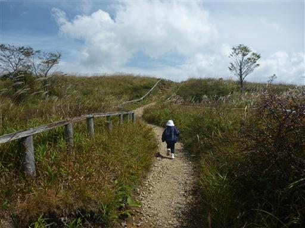
高ボッチ山の山頂に到着。標高1665m。
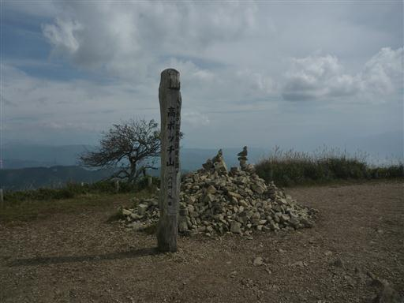
山頂には今にもこけそうなケルンが積まれている。
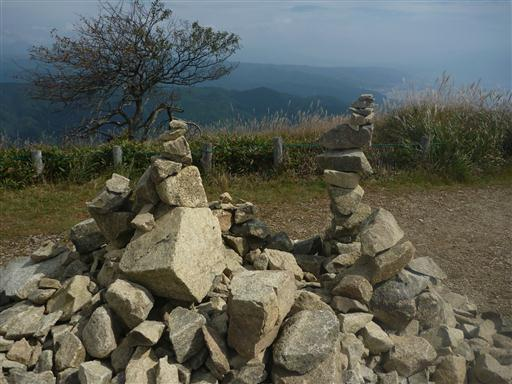
山頂からの展望は素晴らしい。眼下には諏訪湖を見下ろすことができる。
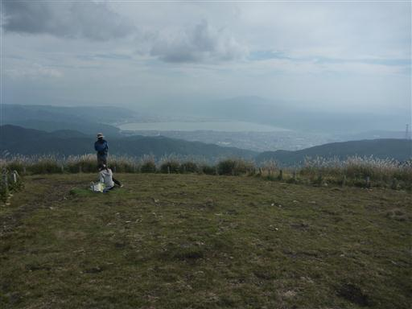
目の前に広大な高ボッチ高原が広がる。
先行者が山頂を後にすると我々だけとなり、辺りは静寂に包まれる。
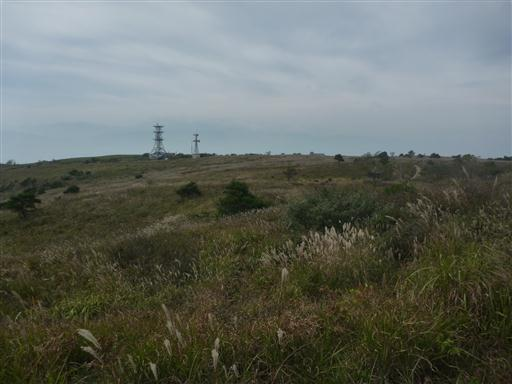
北方には先ほど登った鉢伏山が見えている。だいぶ雲が広がってきた。

駐車場に戻ったら、すぐ近くにある牧場を訪れてみる。
牧場まで続く道は歩く人が少ないのか、草があまり踏まれている感じがしない。
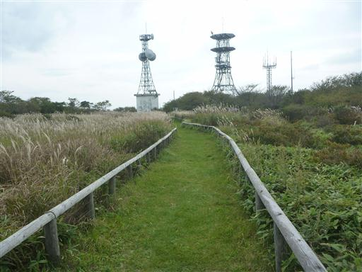
牧場に到着。牛に葉っぱをあげてみようとしたが、あまり近づいてこない。
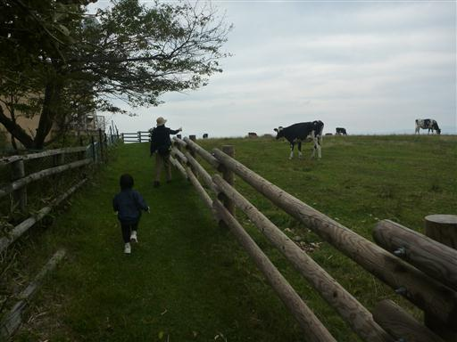
立派な牛。展望の良いところに住んでいるのがうらやましい。
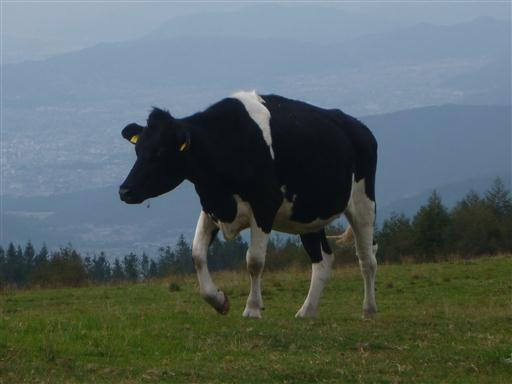
高ボッチ高原を下山したら、帰りに諏訪大社下社に寄って帰る。
ちょうど結婚式が行われている。
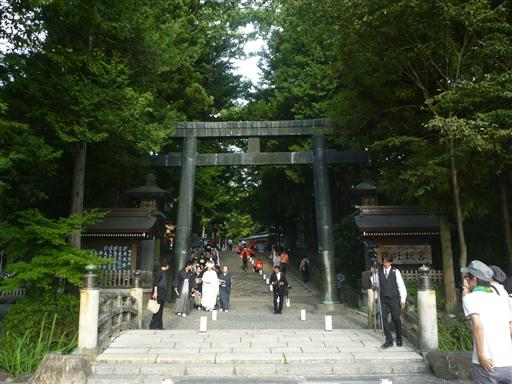
神楽殿。ものすごく大きな注連縄が目を引く。
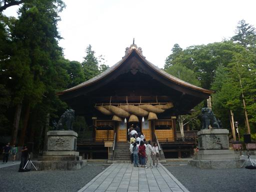
神楽殿の裏に幣拝殿がある。何れも重要文化財に指定されている。
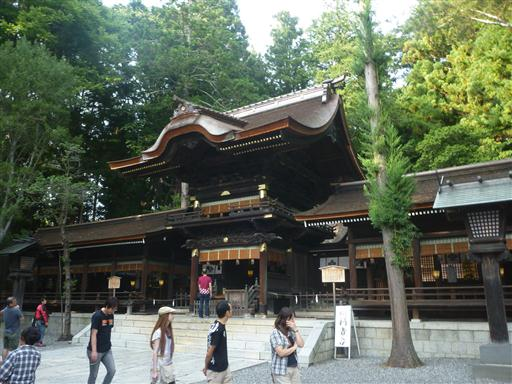
御柱。6年に1度、御柱祭が行われる。
非常に激しい祭りで日本三大奇祭の一つに選ばれている。
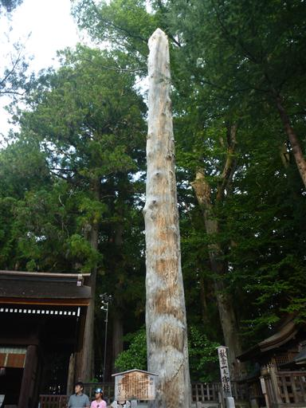
さざれ石。君が代で歌われている石だ。
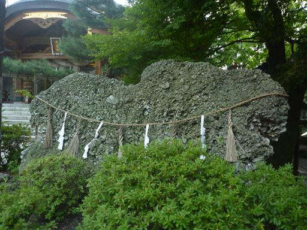
鳥居から離れた場所に変わった形の手洗い場がある。
触るとかなり熱い湯が出ている。
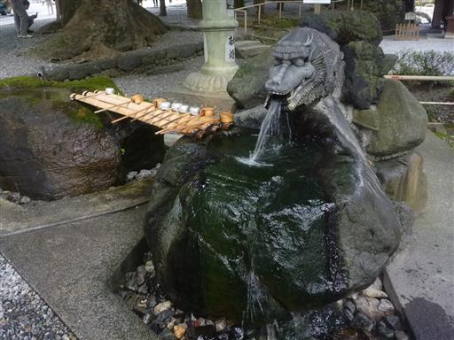
中央道の混雑を避けるため、夕食をとってから帰ることにする。
諏訪で有名なウナギ屋に行ってみたが、開店10分後に到着するとすでに大混雑。
かなり待たされることになった。美味しかったが最近のウナギの値段の高騰はちょっと酷い。
帰りは遅い時間になったが、それでも中央道は3時間の渋滞だった…
往路復路とも中央道の混雑に悩まされたが、おおむね良い天気で展望を満喫できた週末だった。
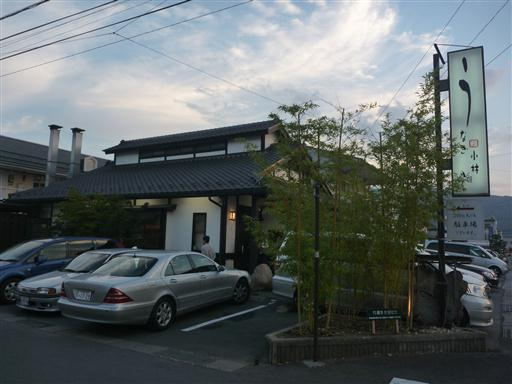